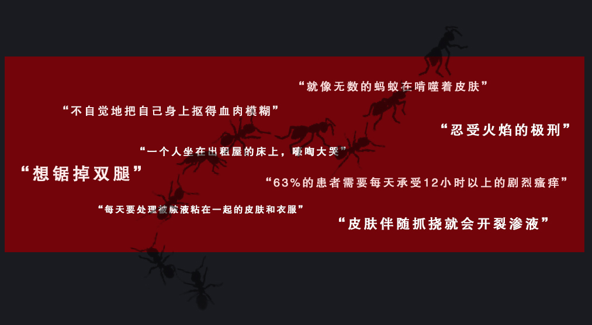

“就像无数的蚂蚁在啃噬着皮肤。”李平这么说。
“皮肤感觉像着火了一样，又烫又痒”
委屈的眼泪经过红疹处，又是一番锥心的瘙痒和疼痛。
特应性皮炎带来的瘙痒是难以忍耐的。
对于大多数人，谈及“痒”，大概只能想起昆虫叮咬的感觉——或许令人烦恼，但
远远称不上痛苦。但对于特应性皮炎患者，“痒”，或许是他们最想摆脱的梦魇。

“瘙痒程度会被放大好几百倍——不是只是某处单个部位痒，而是一处连着一
处，就像无数的蚂蚁在啃噬着皮肤”方茹回想着皮炎发作时候的感受，皱着眉头补充
道，“尤其是有时候到了晚上，睡着了，你意识不清地就一直抓，直到把自己抓醒，泪
水、血水……就跟做梦一样。”
因为难耐瘙痒而导致睡眠中断，这对于特应性皮炎患者来说，可以算是“家常便
饭”了。
《他们被迫每天看到凌晨四点的城市》，这是一篇有关特应性皮炎患者的新闻报
道。“完整的睡眠成为奢侈的梦想”，文稿里这样写道。
痛苦是连续的记忆。
睡眠不⾜⽽带来的疲倦与注意⼒⽆法集中是倒下的第⼆张多⽶诺⻣牌。
对于任何年龄段的⼈来说，⻓期的睡眠剥夺都会对注意⼒、⽣产⼒和情绪波动产⽣负⾯影响。
睡眠不⾜会导致更⾼的焦虑、抑郁和多动症发病率。[4]
持续的疲劳使得工作效率很难提高， 无法停止的抓挠让你难以完成任何任务。
"太痒了，我压根无法正常上班工作，一个人坐在出租屋的床上，嚎啕大哭。"方茹回忆起自己
皮炎最严重的那几年，至今心有余悸。
患病对于工作的影响体现在方方面面。
美国一项评估成年人 AD 负担的调查显示，患有 AD 的人旷工的频率比没有 AD 的人高 3
倍。甚至在轻度 AD 患者中，生产力下降也是明显的.旷工（6.5％），出勤率（20.7％），整
体工作障碍（23.4％）和活动障碍（28.0％）明显受到负面影响。[5]
根据 2020 年发布的《中国特应性皮炎患者生存状况调研报告》，过去一年里，因为特应性皮
炎不得不却勤于工作或上学的平均天数达 14.5 天；重度特应性皮炎患者无法正常工作生活的
比率高达 46.50%。
对于患者陈珊来说，特应性⽪炎的残忍之处在于她不得不放弃⾃⼰热爱的职业。瘙痒，抓挠，
破损的⽪肤，疤痕布满了双腿。每到夏天看到短裙，她⽆时⽆刻不在感慨“为什么要得⽪肤
病，为什么要留下⼀身丑陋的疤”。她最终因为特应性皮炎离开了光鲜亮丽的主持人岗位。[6]
特应性⽪炎对⽪肤状况和外观的影响是第⼆⼤负担，也导致了严重的⼼理负担。
密布的伤疤、粗糙、硬壳斑块状的结痂，许多特应性皮炎患者长期对于自己的皮肤状况处于厌恶状态。
Greg Clark 也谈到了湿疹带来的额外的情感负担。
“孤独来自于皮肤渗出的感觉，皮肤脱
落……你已经在身体上被孤立了……疾病在精神上攻击你。当它到达你的精神层面时，它真的
很麻烦。”
孤独还在于被迫筑起的社交高墙。
为了避免他人侧目，很多特应性皮炎
患者不得不在日常生活中带起口罩，即使在酷夏，也仍旧长袖长裤。
根据《⽪肤病学研究期刊》发布的⼀篇研究显示，⽪炎患者的⾃杀⻛险较其他同龄⼈升⾼了近
3 倍，⽽当伴随瘙痒症状时，相关性尤为显著（OR=3.57,95%CI 2.46-5.67）。[5]
特应性⽪炎的负担不单单影响患者本身，更是笼罩在整个家庭之上的阴云。
患有 AD 的孩子的父母和看护者接受调查时承认，他们的孩子的外表以及由于孩子的疾病而感
到沮丧，无助，悲伤和负罪感使他们感到尴尬。[7]
需要注意的是，睡眠缺失、工作效率的下降同样体现在特应性皮炎患者的家庭亲属身上——
这意味着整个家庭经济生产力的下降。
Xu 等[8]报道 AD 患⼉的⽗⺟每晚因处理患⼉的症状将会减少 2 ⼩时的睡眠时间，睡眠缺乏可
能导致⽗⺟在⽩天的⼯作及家务中表现不佳和技能下降。
与被迫承担的家庭⽣产⼒的下降相对应的，是因为特应性⽪炎⽽不得不加剧的经济负担。
研究对于特应性⽪炎造成的 9 项直接成本进⾏了研究，发现药物，⾮处⽅药的成本，医疗检
查和程序的费⽤，医师就诊，⾃付费⽤，交通和育⼉的费⽤都随着 AD 病情的恶化⽽增加。即
使对于⼤多数病例的轻度⾄中度 AD，给患者及其家庭带来患者影响和经济负担也是巨⼤的。
[8]
根据全国湿疹协会（美国）⽹站公开资料整理，2013 年，每位 AD 患者的直接医疗总费⽤平
均为 11,660 美元，每年的增量成本达到 3,302 美元。
⽽具体到中国，根据《中国特应性⽪炎患者⽣存状况调研报告》，有超过1/5的患者⽤于治疗
特应性⽪炎的直接年⽀出超过12000元[3]；⽽2020年新发布的《中华⼈⺠共和国国⺠经济和
社会发展统计公报》显示全国居⺠⼈均可⽀配收⼊中位数也只有26,523元。